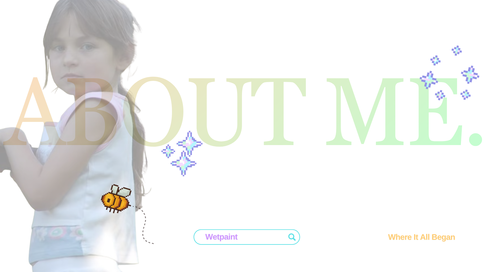
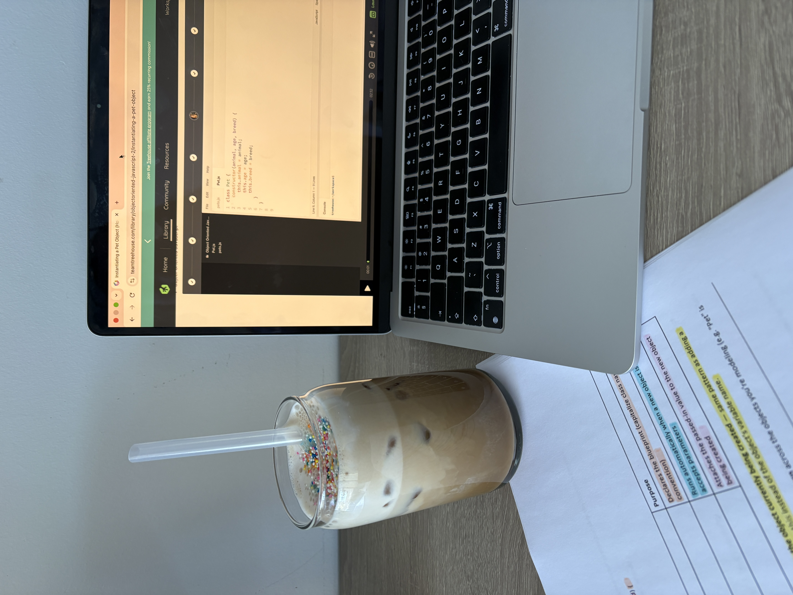

It all started with a computer tower, free time and no desire to touch grass.

I built my first website at the ripe age of 11. My love affair with design began on WetPaint.
Although it unfortunately shut down, my love for creating had only begun.
So for those that aren't familiar, Wetpaint was a site that allowed contributors to create and
design their own websites. Each website was known as a 'Wiki', which
was where you were encouraged to create 'fan sites'. So that was exactly where my love for Hannah Montana shined through... It's so cute to acknowledge in hindsight.
I became quite addicted to the idea of creating and designing something that once was only a thought. It felt like I was painting a canvas, but instead of paintbrushes
and paint, I was Van Gogh or Monet with a keyboard and mouse.
My websites started getting a lot of attention and I somehow managed to get one of my wikis featured on the Wetpaint website! It felt like a huge accomplishment at such a young age, especially when it wasn't even something I considered.. Because to me, all of it was just for fun. But then of course.. life got in the way (more like parents) and my focus had to be offline. At that time (in 2008) it wasn't encouraged or supported to be a 'website nerd'. "What can this actually do for your future?" and "You need to focus on reality" became the most important reframes in my household. Being constantly reaffirmed this mentality really just confused me. It was something I loved to do. Weren't we encouraged in preschool to achieve our dreams? I remember my peers dressing up as vets, doctors, lawyers.. etc. However, I can't say that I saw a developer or anyone representing the tech side of things. So maybe my parents' concerns were correct?
After completing matric through homeschooling, I realised that web development was just a huge part of who I was. So many would say I was just 'chronically online', but to me it was just me being myself. The misconception was that I was hiding from reality, but I was actually just learning. I wasn't just scrolling mindlessly - I was understanding the intricacies of socialisation, trends and marketing. I wasn't just uploading - I was creating collages, virtual scrapbooks and mindmaps. I loved learning about how things worked online, whether it was from the bones of code or the dressing up of design. So, I made the decision to start studying Front End Web Development through Team Treehouse. And of course those concerns and limitations from other people have continued: "Front end is dying" and "AI is taking over, you're never going to need this". But yet, here I am. Listening to myself. My own inner compass. It's never let me down.
It has been a beautiful and challenging journey. Studying hard and for so long really can bring out parts of yourself you didn't know you had. The strength and determination I put into 3am study sessions and having to face hard emotions, such as the avoidance of failure and perpertual doubt that creeps in. Learning front end has taught me the beauty in technical work. It's been so interesting to see how a few typed out words or characters can bring to life a whole idea or message. It's been incredible to have continious 'aha!' moments, where I can see how things actually work. Especially when referencing my websites all of those years ago, I can now at this age explain how those elements worked. It's so wonderful to watch it all unfold.
I have the most incredible support system from my husband, mom and boss. My husband, who bought me a neat MacBook when my last one had seen MUCH better days. My mom, who always put my dreams and ideas before her own. My boss, who had the idea of me studying front end and being gracious enough to fund my studies, despite how long they've taken (you can't say I'm not through). Money can buy you many things, but not the never ending support from people who believe in you. I wouldn't be pushing myself to my limits and enjoying what I do without their support!
I am currently working as a social media manager for a startup company based in the UK. It's extremely fun and challenging working in marketing. Your mindset has to be on a totally different wavelength! My front end techdegree will fuel my technical abilities and give me well rounded knowledge when it comes to design for clients. I love the creative freedom and ability to add variety to my work day. I don't have any intention of stopping my studies. I want to learn as much as possible to keep those 'aha!' moments going. You're never too old to learn, and the web is always adapting and changing.